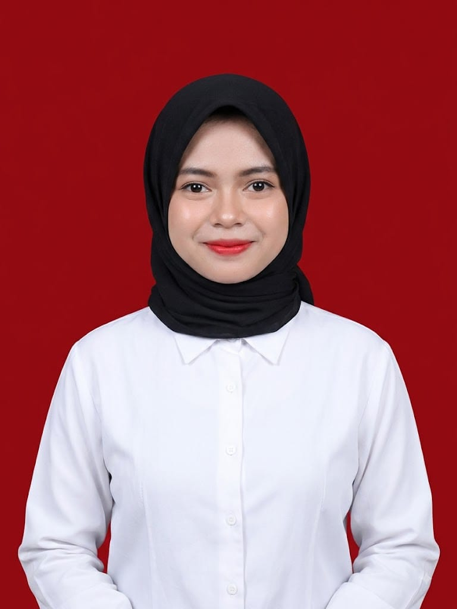

Saat ini
Universitas Negeri Surabaya (UNESA)
Program studi Teknik Informatika
Status: Mahasiswa baru.
Hello, I'm
Informatics Student | Aspiring UI/UX Designer
Mahasiswa baru Teknik Informatika Universitas Negeri Surabaya yang memiliki minat pada UI/UX Design, desain digital, dan pengembangan pengalaman pengguna yang intuitif. Senang mempelajari hal baru, mengembangkan kreativitas, dan berkontribusi melalui kolaborasi.

Saya merupakan mahasiswa baru Teknik Informatika Universitas Negeri Surabaya yang memiliki minat di bidang UI/UX Design, khususnya dalam merancang antarmuka digital yang intuitif dan berorientasi pada pengguna. Saya memiliki kemampuan komunikasi, kerja sama tim, serta pengalaman berorganisasi. Sebagai pribadi yang kreatif, adaptif, dan bertanggung jawab, saya memiliki semangat tinggi untuk terus mengembangkan keterampilan di bidang desain digital dan teknologi.
Pengalaman organisasi dan kegiatan sekolah.
Juni 2023 – 2025
MACRO, Maulid Nabi, Classmate, Isra' Mi'raj
Juni 2023 – 2025
Juni 2023 – 2024
Saat ini
Program studi Teknik Informatika
Status: Mahasiswa baru.
Juni 2023 – 2026
Surabaya, Wonorejo Timur
Prestasi yang pernah diraih.
Kategori: Mading 3D
Kategori: Mading 3D
Kategori: Poster
Bidang: Matematika
Keterampilan yang dikembangkan melalui kegiatan belajar dan pengalaman organisasi.
UI/UX Design adalah minat utama yang sedang saya pelajari dan kembangkan.
Terbuka untuk belajar, berkolaborasi, bertukar ide, dan mengembangkan pengalaman di bidang desain digital serta teknologi.